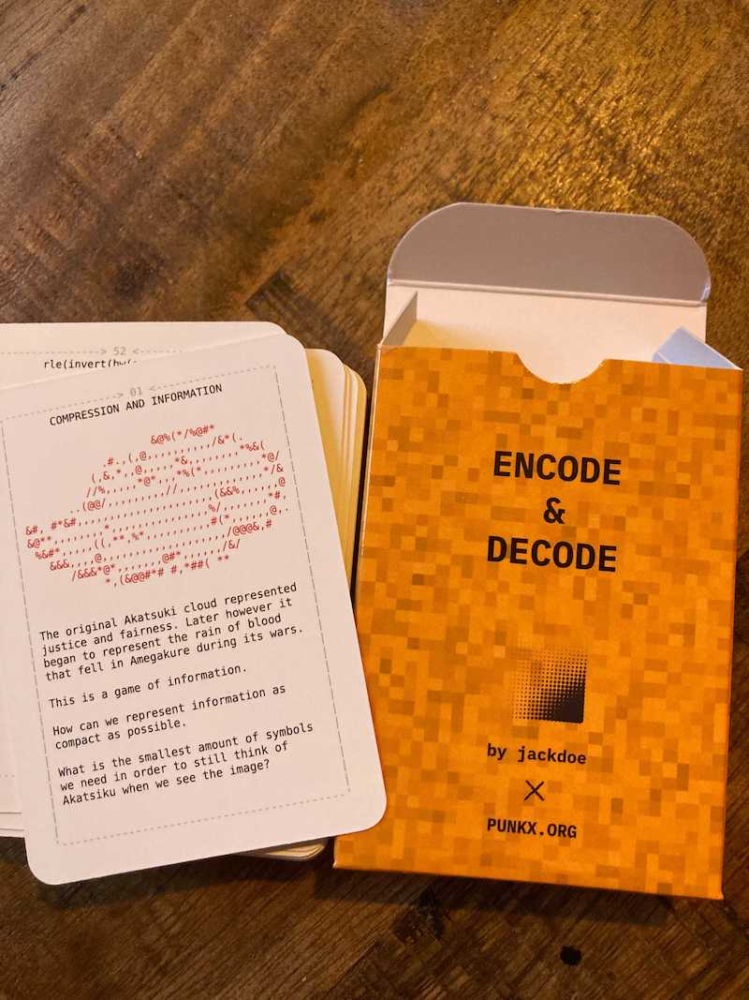
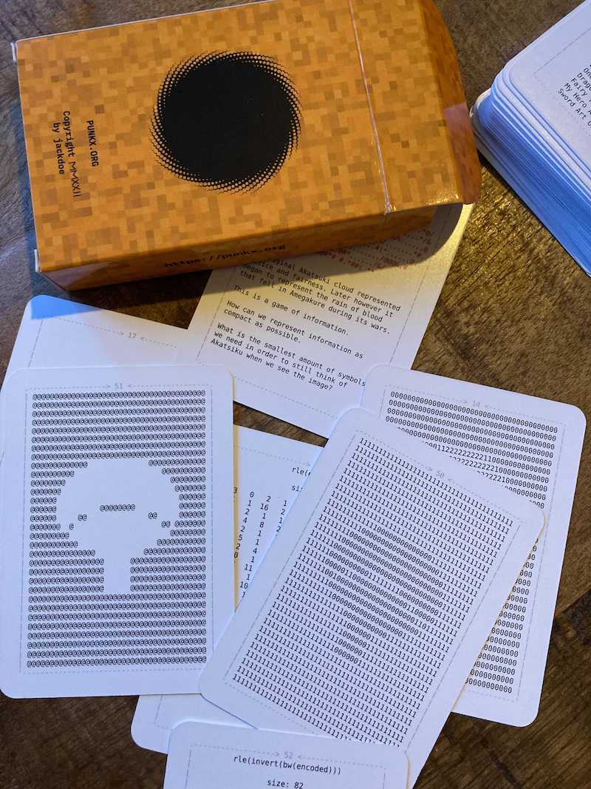
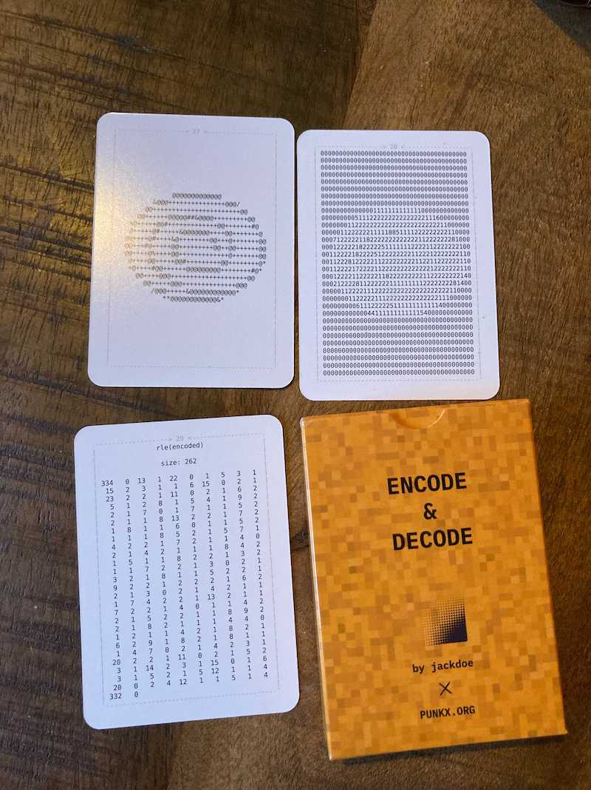
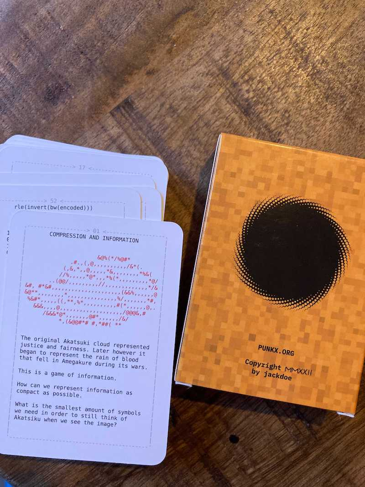
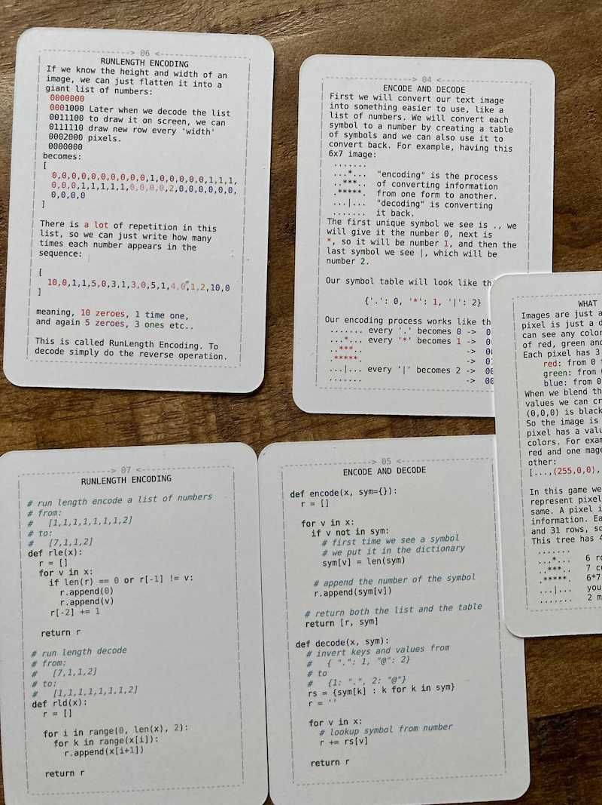

ENCODE/DECODE - RUNLENGTH ENCODING FOR KIDS




Buy now: €5,00 EUR
The goal of this game is to teach kids about compression and patterns, encoding pixels as numbers, then finding patterns in those numbers. My daughter's favorite anime is Naruto, so we used symbols from it as examples of images. The first 10 or so cards explain the concepts of "pixels" (which in this case are just ascii symbols), encoding them as numbers, runlength encoding and also averaging multiple "pixels", but its only so much that can fit in ~1000 characters, so its better if the parent undestands the concepts well and can show more examples of compression and patterns in day-to-day life (e.g. encoding the flag of your country, or black and white versus colored images and etc).

Its more of a puzzle than an actual game, but I think it conveys the concept of compression and encoding really well.
GAME RULES
This game is more of a puzzle than a
game. You can play it alone, or with
friends, but try to start with the easy
and obvious cards.
Remember that it is actually very
difficult to read the encoded images, so
do not get discouraged, and just try it,
one card at a time.
> 1. WATCH NARUTO IF YOU HAVENT
> 2. PICK AN IMAGE CARD
> 3. FIND THE ENCODING CARD
MATCHING THE OUTPUT IMAGE
> 4. IF YOU ARE HAVING FUN GOTO 2
> 5. WATCH:
Hunter x Hunter
One Piece
Bleach
One Punch Man
Dragonball Z
Fairy Tail
My Hero Academia
Sword Art Online
We also made few more card games that you might find interesting:
- programming time, which is a game to teach python and some more fundamental algorithms, from hash tables to RSA
- The C Pointer Game - Pointers, Arrays and Strings, a game to teach kids to look at the computer memory and understand references and values
- 4917, a game to teach kids machine code and how the cpu works with memory and registers
- programming for kids, a log of my journey of teaching my daughter how to code
- The Unix Pipes Game, a game to teach kids to use basic UNIX commands:
cat, sort, grep, head, tail, wc, uniq
- The Unix Pipes Game - Process Substitution, an expansion of the unix pipes game to teach process substition and also:
paste, tr, cut, bc
- PUNK0 - The Function Composition Card Game, use cards to manipulate a list and use its values to win the game